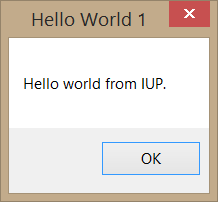
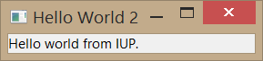
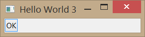
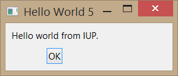

The code bellow will shows how to open an IUP environment and displays a simple message. Each line of code is explained after the code.
Example Source Code

In the first line, we see an include of the C standard library, which is needed by almost all C programs. Next there is an include for the main IUP library, which is all we need for our first example. Next line is a standard main function declaration. Before running any of the IUP's functions, the function IupOpen must be called to initialize the toolkit. The next line creates and displays a message to the user using IupMessage function. This function receives from parameters: title and message. The title will be displayed at the top of the message window and the message is a text message by itself that will be displayed to the user. Following, we have a IupClose function call. After running the last IUP function, IupClose must be run so that the toolkit can free internal memory and close the interface system. Finally the program returns to exit with success.
In Lua instead of includes it is necessary to require the packages we use. The require call replace the IupOpen function called in C. So IupOpen becomes require"iuplua" and like the includes it is done at the top of the code. This will inform Lua that the program described in the next lines makes use of the package iuplua. Other important change from C to Lua is the way that IUP functions are called. The IUP calls in Lua uses the prefix "iup." instead of "Iup" informing Lua to search for the function inside iuplua package. So, in this example we have: iup.Message instead of IupMessage and iup.Close instead of IupClose. Another important aspect of using IUP with Lua is the fact that Lua is a interpreted language and a Lua program execute from the first line to the last one. So, there is no need to create a main function. We just call the iup.Message after the package inclusion. Yet, in the Lua version of our example you will find a call to iup.MainLoopLevel. It will check if iup.MainLoop was already called to avoid calling it again. This is useful only if your script could be executed from inside another context, for regular applications there is no need for calling it.
Compiling and Linking a program that uses IUP (as any other third party library that is not installed on the system) demands that you specify where the include files and the libraries are installed. You also need to link with the iup library. In order to do that in a single command line for our first example is as follows:
gcc -o example2_1 example2_1.o -liupimglib -liup -L../../../lib/$TEC_UNAME
For programs containing several modules we suggest building a makefile (See here how to build one: makefile tutorial). There are also many different IDEs (Integrated Development Environments) in Linux and in Windows that can help you develop an application. They all need the same basic settings to be configured. We also have guides available for the most popular IDEs:
If you want more details on libraries dependencies for static linking, you can check the Building Applications Guide.
Let's change the first example a little bit to add our own dialog.
Example Source Code

Note that we have added a new line in which we declare Ihandles* variables for IUP elements. We also have created two different variables. One called dlg for our main dialog and another called label, which will hold a label with a hello message. Next, a new line creates a iup label control and associates it with the label Ihandle that was previously declared. Its only argument is the text that will be displayed inside the label. Then we reach the line in which we create our main dialog, almost in the same way that we created the button. The difference goes on the parameter passed to IupDialog function. It receives another function that will create a composition control called IupVbox. A IupVbox is a control that aligns all controls passed to it vertically. In this example, we are passing just one control (our label) and a NULL to sign that we are done with our list of elements. Next line presents the way in which IUP changes each control attributes. By calling the function IupSetAttribute the programmer will inform which control has the attribute that needs to be changed, which attribute is that and the new value that the attribute will assume. In our sample, we are changing the main dialog's title to "Hello from IUP Tutorial". The next function is called IupShowXY and tells IUP that we need the main dialog displayed at the center of the screen horizontally and vertically. Following comes one of the most important function which is called in our program: IupMainLoop. This function tells iup to wait for events. Otherwise, the program would go on, end and terminate without dealing with any event. Go on, comment this line, recompile your code and execute your program, and you will see the main dialog blink in the screen and the program ends just after it. It will be a valuable exercise.
From the most simple hello world to the most complex IUP application, all will have this same code structure.
In Lua we created the controls just after the iuplua package require. The controls construction have a different form in Lua, where the constructor name is all lower and its parameters are inside a table. Although you can, there is no need to use iup.SetAttribute. In Lua a control is also a table where the fields are the control attributes and callbacks. In the example all attributes were defined during the control creation, but we could also do label.title or dlg.title after calling the constructor. In Lua some functions also have a syntax sugar, so instead of using "iup.ShowXY(dlg, iup.CENTER,iup.CENTER)" we can write "dlg::showxy(iup.CENTER,iup.CENTER)" but both are exactly the same call.
In the previous section, we saw how to build a basic IUP application, but without any custom interaction with the dialog. In this section, we will add interaction to our application using a button.
Example Source Code

After the usual includes, we find some new lines. These lines contain a regular function called btn_exit_cb that will be registered as our button callback, as will be seen next. This function does nothing special, except showing the hello message that we saw in the first example and also closing the application returning code IUP_CLOSE.
Note that we have added a new handle that will handle our vbox in a clear way. Following is our button declaration. The first parameter is the title for the label, and the second parameter is a global name for a callback which use is now deprecated, so we simply set to NULL. The next lines are our vbox, which now is using a variable. That variable is passed as a parameter to the IupDialog function.
As said before, callbacks are special functions defined by the programmer and called by IUP when an event needs to be handled. To create a callback, the programmer must declare a function and put inside its body anything that he/she wants the application to do when the event occurs. After that, it is necessary to inform IUP that new function is, in fact, a callback. That is done calling the function IupSetCallback. This call will inform IUP that our regular function btn_exit_cb is actually a callback that needs to be executed when our button is pressed. The first parameter is our button Ihandle, followed by the name of the callback and the name of the function to be called, casted as Icallback. The names of the available callbacks can be found at each control documentation. As attribute names, they are always written in upper case letters.
When executed, the application's dialog box will show up, and when the user presses the button, it displays a hello message and will close the application. It seems not a big deal, but with this small sample of code, we have covered the process of creating an IUP application, declare elements and callbacks, and also handle an event. From now on, we are going to see more from IUP controls and how to improve our application using different kinds of controls.
In Lua we set the button action callback just like we set an attribute. So, there is no call to IupSetCallback.
Up until now we have just positioned our controls inside a vbox which, as told, aligns all controls inside it vertically. This is just a small sample of the IUP's layout concept. IUP implements an abstract layout, in which the positioning of controls is done relatively instead of absolutely. For such, composition elements are necessary for composing the interface elements. They are boxes and fills invisible to the user, but they play an important part. When a dialog size changes, these containers expand or retract to adjust the positioning of the controls to the new situation allowing the dialog to adapt even if the resolution of the screen changes. That would come in hand if you port your application to another system with a lower resolution, for example. Main composition elements are vertical boxes (vbox), horizontal boxes (hbox) and filling (fill), among others. There is also a depth box (zbox), in which layers of elements can be created for the same dialog, and the elements in each layer are only visible when that given layer is active.
To clarify the way abstract layout works, lets modify our example adding a label to it.
Example Source Code
Note that there is a new label declaration and this new element appears inside our vbox as the top element. That means it will be displayed above button, and that's all. Our example now has two different elements and is disposed vertically one above the other. An interesting exercise would be to change the code above and use an hbox to see what happens.
In Lua we used a simpler way to associate a callback, using a Lua syntax sugar "button:exit_cb()". But to use this syntax, the button element must exist before the callback declaration, so we also moved its code to after the button construction.
Now that you understand the basics of abstract layout, let us present three attributes available to both vboxes and hboxes. They are: ALIGNMENT, GAP and MARGIN.
ALIGNMENT defines the horizontal or vertical alignment of elements inside the box. If you are using a vbox, it will be an horizontal alignment, or if you are using an hbox, it will be a vertical alignment. Its values can be "ALEFT", "ACENTER" or "ARIGHT" for horizontal alignment, and "ATOP", "ACENTER" or "ABOTTOM" for vertical alignment. The default value is "ALEFT" and "ATOP".
GAP defines a space in pixels between every element inside the box. If you are using a vbox, it will be a vertical space, or if you are using a hbox, it will be a horizontal space. The default value for GAP is 0 (which means no space between elements).
MARGIN defines a margin in pixels. Its value has the format "widthxheight", in which width and height are integer values corresponding to the horizontal and vertical margins, respectively. Its default value is "0x0" (means no margin).
Let's see how our layout responds to these three attributes.
Notice that the Lua version of our example has only a few changes. We just add a line with the label creation and inserted it into the vbox a little further.
Example Source Code

After creating the vbox, we have added three lines that set those attributes to values different than the default values. The result is much pleasanter to see. Although it is still not quite as the first example, which uses a pre-defined dialog. Can you figure out which attributes we need to set in order to obtain a more closer appearance?
| Previous | Index | Next |